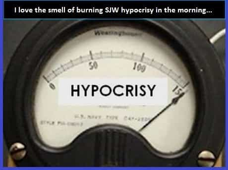
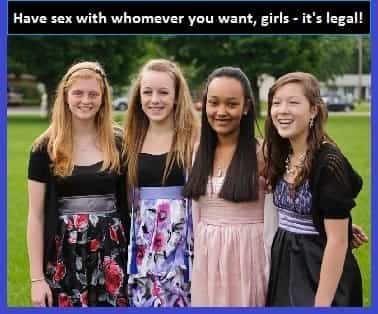

Bob Smith is a man in search of the truth. His favorite quotes are, "We're all fools on this earth, and I can be no different"; "I know it's true, I read it at the LIE-brary"; and "The truth is not misogynistic, it's just the truth".


Much has been made very recently, in the mainstream media and the alternative media, regarding the notion that California’s new law, Senate Bill No. 1322, makes child prostitution theoretically legal within the State of California. And after a very close investigation of that particular piece of legislation by your old Uncle Bob, I have come to the conclusion that this is not entirely accurate.
The State of California has passed a controversial law decriminalizing prostitution for minors by treating them as victims, not criminals, but that has some legislators arguing that in theory, it legalizes child prostitution.
SB 1322, authored by Sen. Holly Mitchell (D-Los Angeles), was part of a series of bills Gov. Jerry Brown signed into law in that will go into effect on January 1, 2017. While solicitation and loitering with the intent to commit prostitution are misdemeanor crimes, SB 1332 bars law enforcement from charging minors — anyone under the age of 18 — with prostitution.
In actuality, California’s new pedophile-friendly bill does not specifically legalize child prostitution—it merely takes away virtually all of the criminal penalties that a consenting minor child under the age of 18, and a consenting adult over the age of 18, might incur for engaging in the practice. And as the progressive California lawmakers no doubt want you to believe, that is a very, very great distinction there, my friends—yes indeed.
Essentially, this new leftist bill puts lipstick on a pig. The pig is still a pig, and it’s ugly as hell, very much like that green-haired, shrapnel-faced, tatted-up, single mom you know—the one who wears a ton of whorish makeup, in order to mask her unsightly mug, so that she might more easily sell her oft-used ass. In order to prove my assertion, we’ll dissect the actual legal language of the bill which proves this point, in just a minute.
As our first order of business, however, we’ll take a look at another piece of interesting legislation that is buried within the guts of California SB-1322, which virtually all mainstream and alternative media journalists have either unintentionally missed, or decided to ignore altogether. And it’s a crafty little piece of legislation, I must admit, as it actually criminalizes being poor. That is, it makes a criminal out of any poor sap who doesn’t have enough money to pay for the services of an underage California hooker.

The specific verbiage which points out the aforementioned can be found within Section 1-647(c), of SB-1322, which reads:
647. Except as provided in paragraph (2) of subdivision (b) and subdivision (l), every person who commits any of the following acts is guilty of disorderly conduct, a misdemeanor…(c) Who accosts other persons in any public place or in any place open to the public for the purpose of begging or soliciting alms. (e) Who lodges in any building, structure, vehicle, or place, whether public or private, without the permission of the owner or person entitled to the possession or in control of it.
(The entire text of California Senate Bill No. 1322 can be accessed right here.)
So it is now a crime to ask for financial assistance from anybody, in public places and public spaces in California, and it is now a crime to sleep on anybody’s property, without their express permission—and this includes a public park, or a bus bench, or a sidewalk. In short, being destitute in the State of California is now a crime.
No matter how you look at it, the State of California has made panhandling and sleeping in a public place illegal. If you get arrested for either offense, and have the money to fight it in court, you might be able to thwart a conviction, or get your conviction overturned. But if you’re destitute or homeless (which is virtually the only reason why you would panhandle or sleep in a public place to begin with), you won’t be able to fight the charges anyway. Ch-ching—the state wins again!

Myriad corporations, via the avid protection and eager assistance of their liberal, legislative lapdogs in California, can now force vaccinations on virtually any child who resides within the state, a practice which, as a whistleblower who worked for the Center for Disease Control has very openly admitted, imposes serious health risks on the recipient; they can gobble up as much of the available potable water in California as they desire and sell it or hoard it at their leisure; and now, pimps, thugs, gangsters and degenerates can prostitute your underage child without fear of interference from the law, while any adult with enough money to pay for the service can freely and openly bang your underage child without fear of legal reprisals of any kind (more on this in a minute).
However, if you should happen to take refuge from the vagaries of out-of-control inflation and/or lawmaker-assisted job-decimation, by pausing for a few moments, in order to take a nap underneath a bridge or doze off in a park, you’re going straight to the slammer, mister. And don’t ask anybody along the way for a couple of bucks so you can buy a cheeseburger or we’ll add a second offense to the charges.
If you are really, really hungry, or if you have no way to pay your bills, well…pimp your nine-year-old daughter out for sex, all right? Get with the goddamned progressive program, you hideous lawbreaker. What the hell is wrong with you?

So let’s get back to that child prostitution law which is housed within California SB-1322, shall we. Because, as previously mentioned, it doesn’t legalize child prostitution within the State of California, it merely rescinds any and all criminal penalties that a minor child might incur, for engaging in the practice, while simultaneously giving the judge overseeing the case, the power to designate some of them as dependent children of the court in the bargain.
The specific verbiage which points this out can be found within Section 1-647(2), of SB-1322, which reads:
647. Except as provided in paragraph (2) of subdivision (b) and subdivision (l), every person who commits any of the following acts is guilty of disorderly conduct, a misdemeanor… (2) Notwithstanding paragraph (1), this subdivision does not apply to a child under 18 years of age who is alleged to have engaged in conduct to receive money or other consideration that would, if committed by an adult, violate this subdivision. A commercially exploited child under this paragraph may be adjudged a dependent child of the court pursuant to paragraph (2) of subdivision (b) of Section 300 of the Welfare and Institutions Code and may be taken into temporary custody pursuant to subdivision (a) of Section 305 of the Welfare and Institutions Code, if the conditions allowing temporary custody without warrant are met.
So if your underage daughter gets busted for hooking in California, she won’t even get charged with a misdemeanor; however, she might be adjudged a dependent child of the court and be taken into temporary custody. I’m sure it probably depends on how hot the judge thinks she is.
And what about the penalties incurred by adults who engage in sexual acts with underage prostitutes within the State of California?
The specific verbiage which spells this out can be found within Section 1-647(2), of SB-1322, which reads:
647. Except as provided in paragraph (5) of subdivision (b) and subdivision (l), every person who commits any of the following acts is guilty of disorderly conduct, a misdemeanor: (3) An individual who solicits, or who agrees to engage in, or who engages in, any act of prostitution with another person who is a minor in exchange for the individual providing compensation, money, or anything of value to the minor. An individual agrees to engage in an act of prostitution when, with specific intent to so engage, he or she manifests an acceptance of an offer or solicitation by someone who is a minor to so engage, regardless of whether the offer or solicitation was made by a minor who also possessed the specific intent to engage in an act of prostitution. (4) A manifestation of acceptance of an offer or solicitation to engage in an act of prostitution DOES NOT CONSTITUTE A VIOLATION OF THIS SUBDIVISION UNLESS SOME ACT, IN ADDITION TO THE MANIFESTATION OF ACCEPTANCE (author’s emphasis), is done within this state in furtherance of the commission of the act of prostitution by the person manifesting an acceptance of an offer or solicitation to engage in that act. As used in this subdivision, ‘prostitution’ includes any lewd act between persons for money or other consideration.
So it’s now a misdemeanor (disorderly conduct, to be specific) for an adult to engage in sexual acts with an underage prostitute in California. But there appears to be a convenient loophole in the legislation. Essentially, it looks very much like a deliberately created Catch-22 which makes it extremely easy for any adult who is accused of having sex with a “child prostitute” to escape the charges.
In fact, upon closer inspection of (4) above, it looks as if a peace officer would actually have to catch the perpetrator in the act of having sex with the child, in order to arrest the adult in question. And even if the adult in question doesn’t escape the charges, well, it’s still only a misdemeanor. So the full-tilt pedo party is definitely on—right now—within the warm-and-fuzzy boundaries of the great State of California.
Perhaps liberal Californians should try to look on the bright side here. Because things could always be crazier. Take Magnolia, Texas, for example. In that fine city, it is now illegal to walk your own child home from school.
I’ll bet the liberal residents of The Golden State are breathing a collective sigh of relief after finding out about that one. At least they don’t have it as bad as they do over there in that evil little town in the godforsaken Red State of Texas.
Why, it probably makes the average liberal Californian feel all patriotic, puffed-up and proud; which, much like what has now been conclusively proven to be the effective legalization of child prostitution within the State of California by your old Uncle Bob, is exactly how the leftist social engineers undoubtedly planned it.
Read More: Has Higher Education Become A Scam?